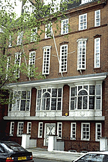

Here are some links to companies and groups that we thought you might like!
One of our favorite research collections of photographs of period interiors is now accessible on line. This is from the Minnesota Historical Society, and their photograph collection has excellent images of house interiors from the mid-19th century through the 20th century. Go to the Visual Resources Database.Type Keywords: Home Life. For images of people and period clothing, type Keywords: Family Life.
Photo: The Old Swan House, Chelsea Embankment, London, by R. Norman Shaw, 1875-7.